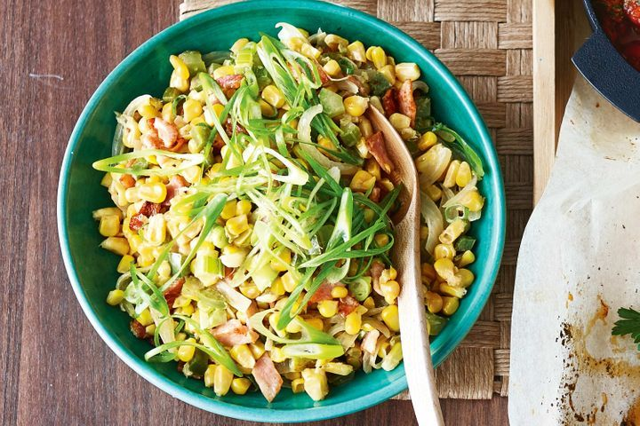

Corn Maque Choux

Ingredients
- 4 Corn Cobs, husks and silk removed
- 2 tsp Olive Oil
- 4 Bacon Rashers
- 1 Onion thinly sliced
- 1 green capsicum
- 1/3 C. Cream
- 1 Green Onion
Directions
- cut corn from cobbs
- Heat oil in a large saucepan over medium-high heat. Add bacon. Cook for 3 minutes or until crisp. Add brown onion, capsicum and celery. Cook for 5 minutes or until softened.
- dd corn and 2 tablespoons of water to pan. Cook for 5 minutes or until corn is just tender. Stir in cream. Season with salt and pepper. Serve sprinkled with green onion.
Return Home